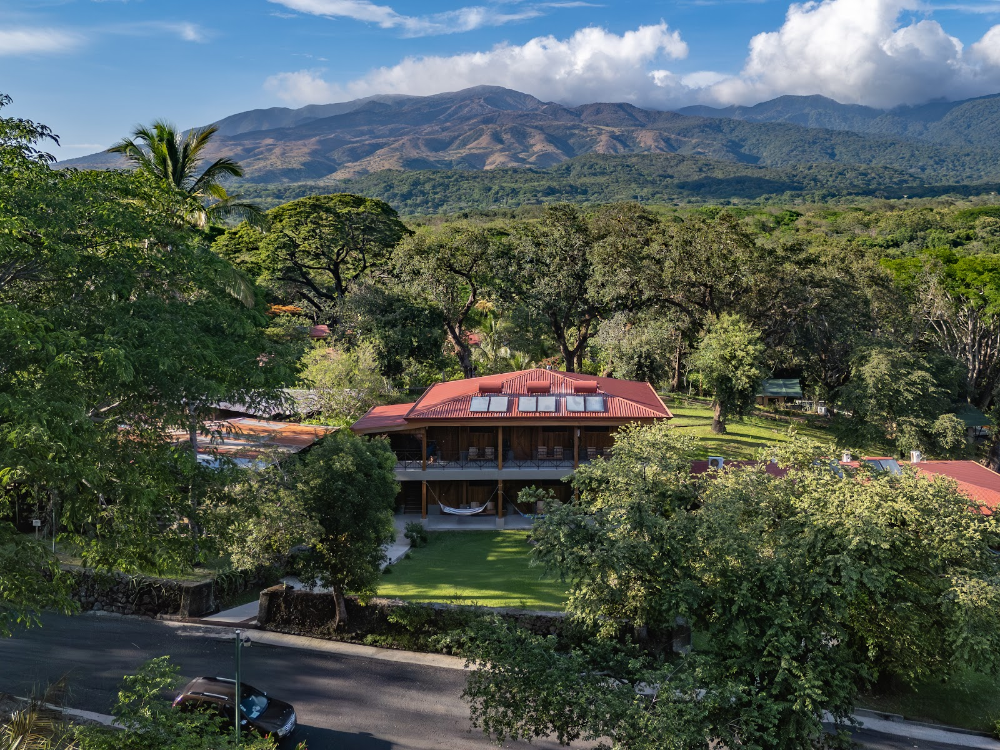
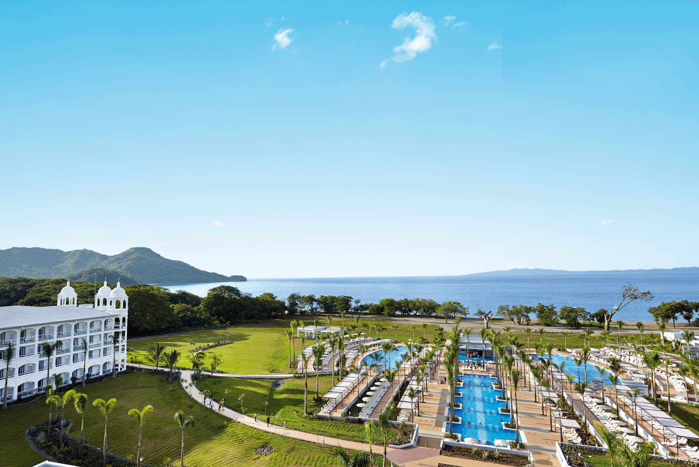
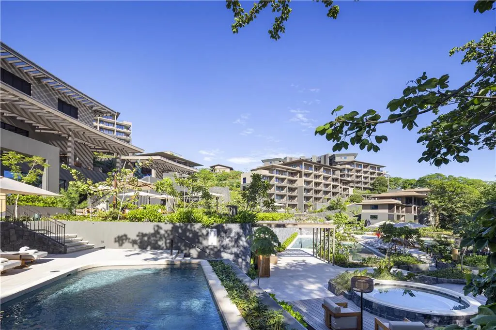
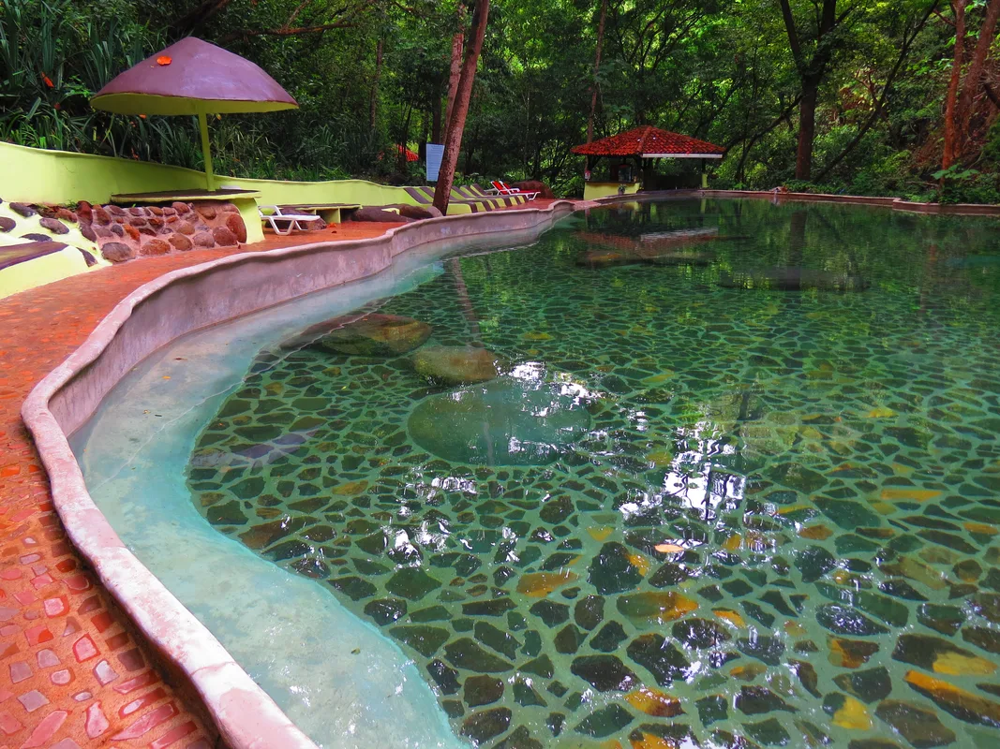
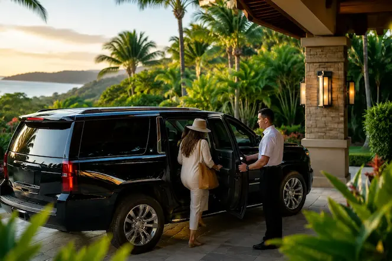

Recommended hotels

Hotel Hacienda Guachipelín
Your adventure basecamp beside Rincón de la Vieja's volcanoes and hot springs.
View Hotel →
Hotel Riu Palace Costa Rica
A 24-hour all-inclusive beachfront resort on golden-sand Playa Matapalo.
Currently closed for renovation; confirm reopening status before booking.
View Hotel →
Waldorf Astoria Costa Rica Punta Cacique
A secluded oceanfront escape at Punta Cacique with refined design and a short transfer from Guanacaste Airport.
View Hotel →Recommended tours

Horseback Riding at Hacienda Aromal
Private horseback riding through Hacienda Aromal's natural trails, deer, armadillos, anteaters and tropical birds in the heart of Guanacaste. Authentic Sabanero experience with certified bilingual guide.
View Experience →
Miravalles Volcano Waterfalls & Natural Spa
Private full-day at Miravalles Volcano, 3 cascading waterfalls, geothermal hot springs and volcanic mud treatments in a live crater. Lunch and all entrance fees included.
View Experience →
Waterfall & Las Pumas Wildlife Rescue Center
Private half-day at Llanos del Cortes waterfall and Las Pumas Wildlife Rescue Center, swim under the falls, then meet pumas, jaguars, ocelots, monkeys and macaws. Lunch included. Certified bilingual guide.
View Experience →Best destinations

La Fortuna & Arenal
Volcano scenery, hanging bridges, wildlife and hot springs in Costa Rica’s adventure capital.
Explore →
Rincón de la Vieja
Volcanic landscapes, waterfalls and high-energy adventures close to Liberia.
Explore →
Playa Hermosa
A calm Guanacaste beach with a relaxed atmosphere near Papagayo and Coco.
Explore →Travel guides

Liberia Airport Transportation (LIR): Private Transfers to Guanacaste Hotels
Landing in Costa Rica is exciting—but figuring out transportation shouldn't be. Here's everything first-time visitors need to know before arriving at Liberia Airport.
Read Article →
Is Río Celeste Worth the Drive From Papagayo?
A balanced, locally-informed look at whether the famous turquoise river and its rainforest trail are worth the trip from the Papagayo area, plus who might prefer something closer.
Read Article →
Costa Rica in September: Will Rain Ruin Your Tours?
September rain rarely cancels tours in Guanacaste and Arenal. Here's how the green season actually works and how to plan around it.
Read Article →Plan your Families experience with a local expert.
Private transportation, personalized tours and practical advice in one conversation.